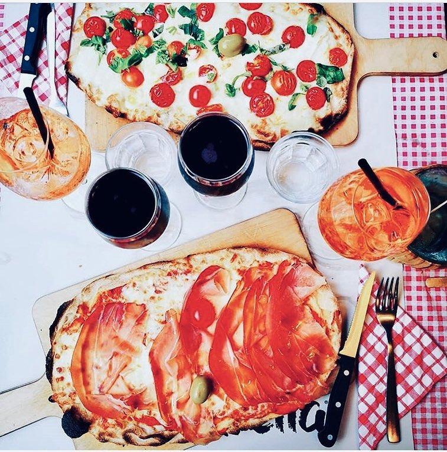

Savoring Tradition: Exploring the Culinary Delights of Pinsa, Carbonara, and Aperitif
Italy, renowned for its rich culinary heritage, is a treasure trove of gastronomic delights. Among the myriad of flavors, Pinsa, Carbonara, and Aperitif stand out as iconic representations of Italian culinary prowess. Let's embark on a journey through these delectable offerings that captivate the palates of food enthusiasts worldwide.
1. Pinsa: Rediscovering Ancient Flavors
Pinsa, a culinary gem hailing from ancient Rome, has experienced a renaissance in recent years. This Roman-style pizza distinguishes itself with a unique blend of flours, including soy and rice, resulting in a light and airy crust. The Pinsa's irregular shape and delectable toppings make each bite a journey through the centuries, connecting modern pizza lovers with the traditions of ancient Roman bakers. Whether adorned with classic Margherita toppings or innovative combinations, Pinsa offers a tantalizing taste of history.
2. Carbonara: A Roman Classic Transcending Time
Carbonara, an everlasting symbol of Roman cuisine, is a pasta dish that has conquered the hearts and taste buds of enthusiasts globally. Originating from Rome, this timeless classic features al dente spaghetti adorned with a luxurious sauce made from eggs, Pecorino Romano cheese, guanciale, and black pepper. The result is a creamy, savory masterpiece that effortlessly marries simplicity and indulgence. Carbonara not only satisfies the stomach but also provides a sensory journey into the soul of Roman culinary traditions.
3. Aperitif: The Art of Pre-Dinner Revelry
An Aperitif, a prelude to a delightful dining experience, is a cherished ritual in Italy. This pre-dinner drink serves as a social catalyst, bringing friends and family together to unwind and stimulate the appetite. From the iconic Aperol Spritz to the timeless Negroni, the world of Italian aperitifs is as diverse as the country's landscapes. Sipping on these carefully crafted concoctions, accompanied by small bites known as "antipasti," creates an atmosphere of conviviality and sets the stage for a memorable dining experience.
In Conclusion: Celebrating Culinary Diversity
Pinsa, Carbonara, and Aperitif represent just a glimpse into the diverse and captivating world of Italian cuisine. These culinary treasures not only satisfy the senses but also tell stories of ancient traditions, regional influences, and the artistry of Italian chefs. So, whether you find yourself savoring the crunch of a Pinsa, twirling spaghetti laden with Carbonara sauce, or clinking glasses during Aperitif hour, you are indulging in a cultural feast that transcends time and tantalizes the taste buds. Buon Appetito!
